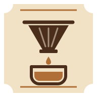
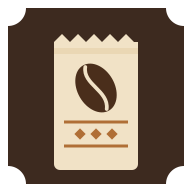
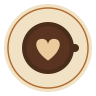

Pick a variant by its file name. Each one is shown at 192, 96 and 48 px, then on light and dark home screens and under a circle mask.
A single roasted bean stamped on the dark-chocolate label, between the badge's caramel rules.
roast-bean.svg
The brew dial (bezel ticks, caramel track), with a coffee bean where the needle pivots.
bean-dial.svg
A cup seen from above: latte-art heart in the crema, saucer ringed by the timer's track.
crema-cup.svg
A ribbed V60 cone dripping into a cup, printed in brown on the crema label.

pour-over.svg
A mug with three curls of steam on the caramel label: warm and plain.
steaming-mug.svg
A stopwatch whose face is a coffee bean: the timer and the coffee in one mark.
stopwatch-bean.svg
A crimp-topped bag wearing a miniature recipe label: badge rules, diamond, bean.

coffee-bag.svg
A round crema icon: cup from above with a heart, no frame. Suits circular launchers.

latte-round.svg